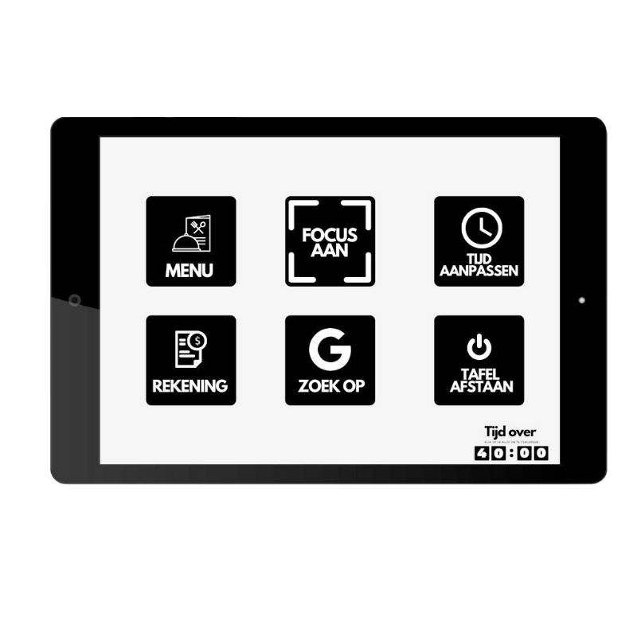

New product development
Voor het vak NPD heb ik met een andere studenten een nieuw product bedacht wat samenwerken in het TTH restaurant stimuleert. Wij hebben uiteindelijk een tafel ontworpen dat zich door middel van een interface kan openen en afsluiten van de buitenwereld. Dit kan worden toegepast door geluidsichte schermen dat uit de grond kan komen.
Op de interface zijn nog meer functies beschikbaar, zoals eten op afstand bestellen en betalen. Hieronder is een duidelijke visuele uitleg bij ons concept.